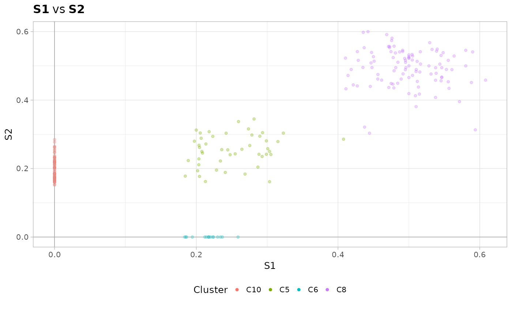

Plot the fit for two dimensions, one against the other. Colour each point (defined as the ratio of sucesses over trail) according to the clustering assignments.
plot_2D(
x,
d1,
d2,
cex = 1,
alpha = 0.3,
cut_zeroes = TRUE,
binning_n = NA,
binning_b = NA,
downsample = Inf,
colors = NA,
bin_params = FALSE
)An object of class 'vb_bmm'.
The name of the dimension to plot (x-axis).
The name of the dimension to plot (y-axis).
Cex of the points and the overall plot.
Alpha of the points.
If TRUE, remove points that are 0 in both dimensions.
This parameter goes with binning_b. If both NA,
no binnig is computed. If an integer value points are binned in a grid of size
defined by binning_b, and up to binning_n points are sampled
per bin according to each cluster whose points map inside the bin.
This parameter goes with binning_n. If both NA,
no binning is computed. If a real valuem points are binned in a grid of size
binning_b by binning_b.
Maximun number of points to plot. Default is Inf, no downsampling.
Optional vector of colors, default (NA) are ggplot colors.
If TRUE it adds also a point to show the fit Binomial success probabilities.
A ggplot object.
data(fit_mvbmm_example)
# Sample names are "S1" and "S2" for this dataset
plot_2D(fit_mvbmm_example, "S1", "S2")
